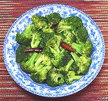

|
Broccoli, SichuanChina - Sichuan - Qiang Xi Nan Hua Cai | ||||
| Serves: Effort: Sched: DoAhead: |
4 side ** 20 min Prep |
This vegetable side dish is very easy to make. In this recipe, the Chili and Sichuan Peppercorns make their presence known, but are not at all assertive. | |||
|
11 5 1/2 2 1/3 1 |
oz t T t t |
Broccoli Florets (1) Chilis, dry (2) Sichuan Peppercorns (3) Oil Salt Sesame Oil. |
Prep - (15 min - 10 min work)
|